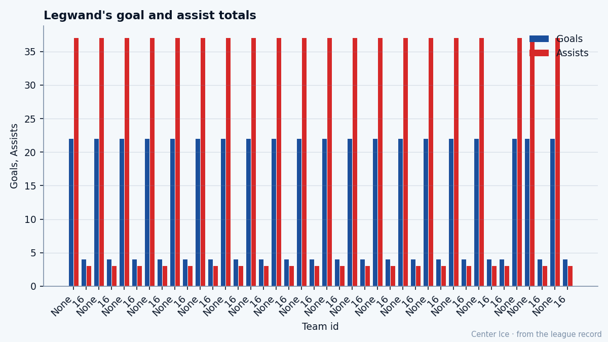

NSH
NSHPotential 85, Overall 89: The Bureau says David Legwand peaked at 24
The fastest center in the league leads Nashville to first place in the Central. The Book has him past his ceiling.
 Tomáš VránaProfile writer · The Sweater
Tomáš VránaProfile writer · The Sweater David Legwand87 is 24 years old. The League Scouting Bureau's Book has him at 89 today, three points above his base grade of 88 on the strength of a +3 run on the Development Index. The Book also has his potential at 85. He is playing four grades above the ceiling the Bureau drew for him, and he is doing it at an age when most men still have room.
David Legwand87 is 24 years old. The League Scouting Bureau's Book has him at 89 today, three points above his base grade of 88 on the strength of a +3 run on the Development Index. The Book also has his potential at 85. He is playing four grades above the ceiling the Bureau drew for him, and he is doing it at an age when most men still have room.
Nashville sits first in the Central at 29-15-5, 71 points, and Legwand has scored 42 goals and 71 points in 53 games, a 109.8 pace over 82. He leads the Predators. The man who drafted him, David Poile, gave up a first-round pick to San Jose in 1998 to take him second overall. The Bureau's ceiling says that pick was already spent by the time Legwand turned 24.
He grew up in Grosse Pointe, a suburb north of Detroit, and played for the Detroit Little Caesars at the Quebec International Pee-Wee Tournament in 1993 and 1994. The Plymouth Whalers took him into the OHL and he repaid them with 105 points in the season before the draft, 54 goals and 51 assists, enough to win the Red Tilson Award as the most outstanding player in the league. Mono pulled him back to Plymouth for a second junior year; he came out of it with a growth spurt, and the Predators asked him to put on weight before 1999-2000. Poile moved for him.
On December 23, 2000, during a game against the New York Rangers, he became the first player in the league to score on a penalty shot in overtime, at 20. The prediction at that point was a top-six center with speed and a soft pair of hands. The Book agrees with the speed. It rates him 99 on Speed, his highest grade. Acceleration is 94. Agility is 95. Deking is 93. Puck Handling is 93. He can separate from anyone, at any pace, with the puck on his tape.
It does not have him as a man who can finish anyone. Fighting is 50. Spin Behind the Net is 55. The half-wall belongs to the other guy.

Last season he scored 22 goals in 41 games. This season he has 42 in 53. The assists went from 37 to 29, a drop of 8. The points went from 59 to 71. He is shooting more and passing less.
The room around him has holes.  Greg Johnson80, the second-best center on the depth chart at 82, has been out with an ankle since late January and is not back until February 11.
Greg Johnson80, the second-best center on the depth chart at 82, has been out with an ankle since late January and is not back until February 11.  Tomas Vokoun90 in net at 92 is carrying more than a goaltender should on a team that gives up 3.09 goals a night.
Tomas Vokoun90 in net at 92 is carrying more than a goaltender should on a team that gives up 3.09 goals a night.  Scott Walker82 at 84 and Martin Rucinsky79 at 81 are the other forwards above 80. Legwand's morale sits at 94 and the Bureau's Index has him rising.
Scott Walker82 at 84 and Martin Rucinsky79 at 81 are the other forwards above 80. Legwand's morale sits at 94 and the Bureau's Index has him rising.
The contract runs $8.37M for 2 more years, which puts him among the top salaries on the roster and keeps him out of July. If the ceiling is real, Poile overpaid. If the ceiling is wrong, the deal was cheap in December and gets cheaper every month.
The Bureau's revision cycle produced 85, and the Bureau stands behind its numbers until the next edition. Legwand has 42 goals at 24, a speed grade of 99, and a room in first place with no one else scoring at his rate. The road from Grosse Pointe did not end where the Bureau drew the line.